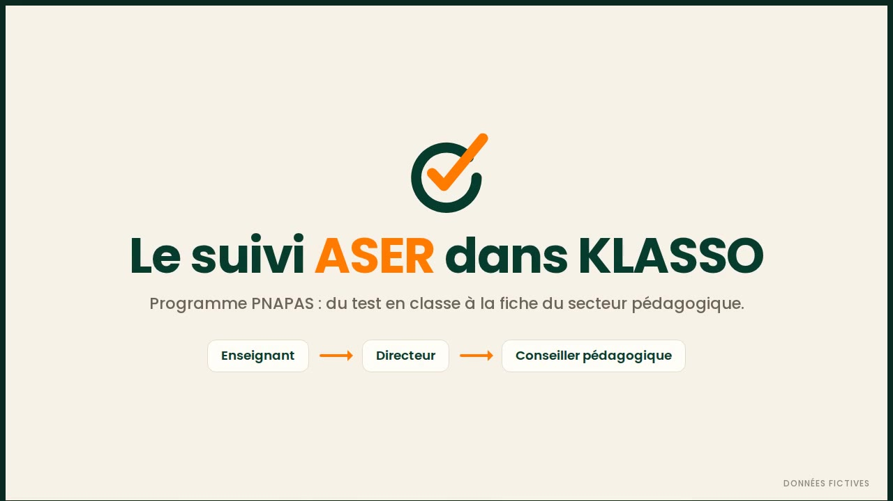
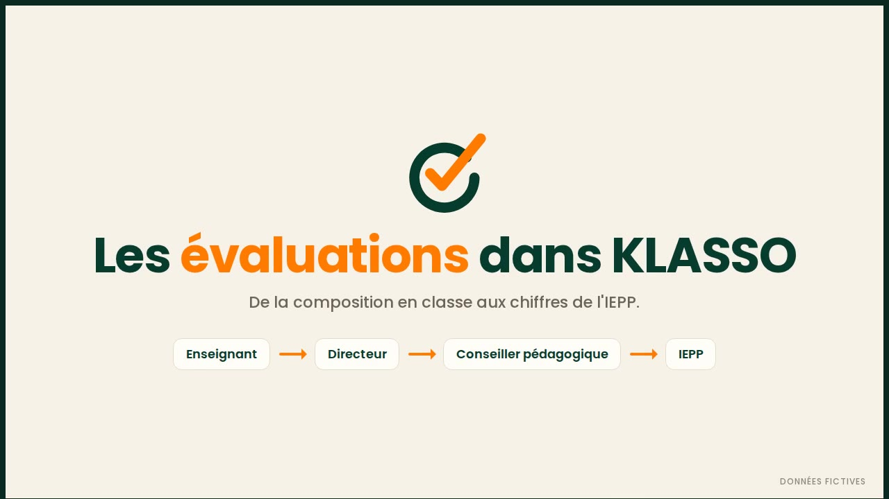
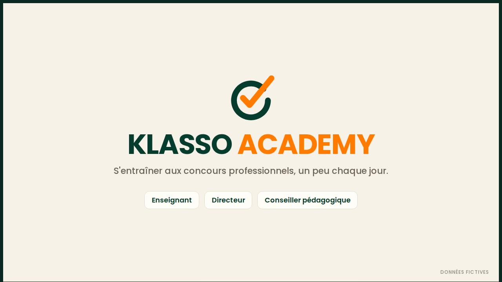
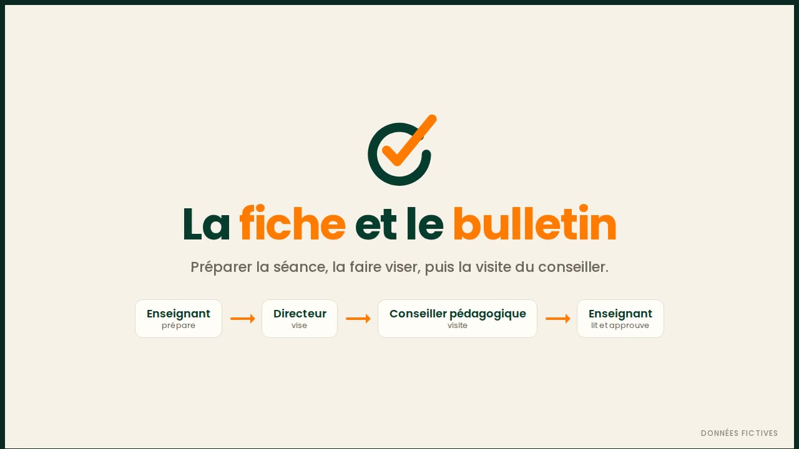

Les vidéos de KLASSO
Chaque vidéo montre un parcours complet dans l'application, avec des données fictives. Touchez une vidéo pour la regarder ou la télécharger.
Présentation de KLASSO1 min 07L'appel, les fiches de cours visées, les évaluations et la sauvegarde automatique.
KLASSO, application Android indépendante éditée par Armel TRA. Contact : klassocorporation@gmail.com

Le suivi ASER dans KLASSO2 min 18Le programme PNAPAS de bout en bout : le directeur active le suivi, l'enseignant saisit les niveaux et la progression, la fiche de l'école se remplit seule, re-tests, remédiation, puis le suivi et la fiche du secteur pour le conseiller pédagogique.
Les évaluations dans KLASSO1 min 52De la composition en classe aux chiffres de l'IEPP : Lecture, Mathématiques, EDHC et AEC sur 10, calcul de la moyenne, saisie des notes, statistiques, visa du directeur, suivi du conseiller et de l'inspection.
KLASSO ACADEMY1 min 34S'entraîner aux concours professionnels : défi quotidien, compétition chronométrée, partie rapide en logique et sur le statut général de la fonction publique, niveaux, badges et classement.
La fiche et le bulletin1 min 45La fiche de séance préparée par l'enseignant et visée par le directeur, puis le bulletin de visite du conseiller pédagogique, lu et approuvé par l'enseignant.